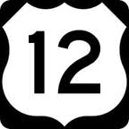
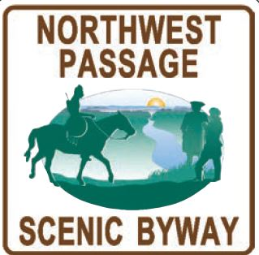

Sign # and Marker Name
#264 - Ant and Yellowjacket
#111 - Spalding's Mission
#316 - Indian Houses
#250 - Slaterville
#495 - Tsceminicum
#501 - 18th Street Bridge
#502 - John Silcott
#486 - Lenore Tram
#249 - Lewis and Clark
#466 - Gold Rush Ferry
#309 - Asa Smith Mission
#310 - Long Camp
#347 - Looking Glass
#333 - Whitehouse Pond
#334 - Lolo Trail Crossing
#247 - Lolo Summit